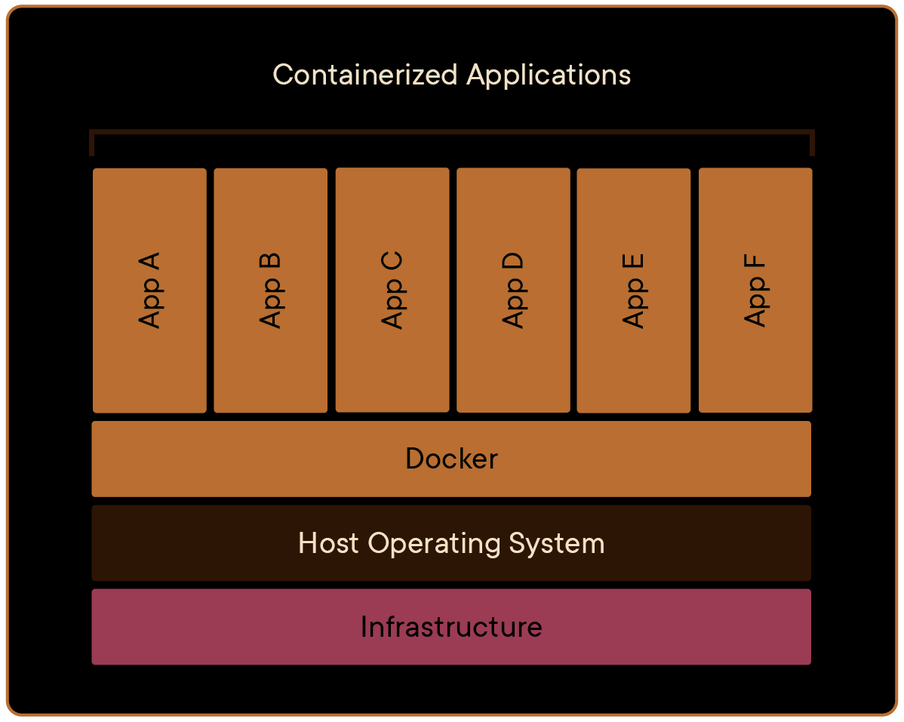
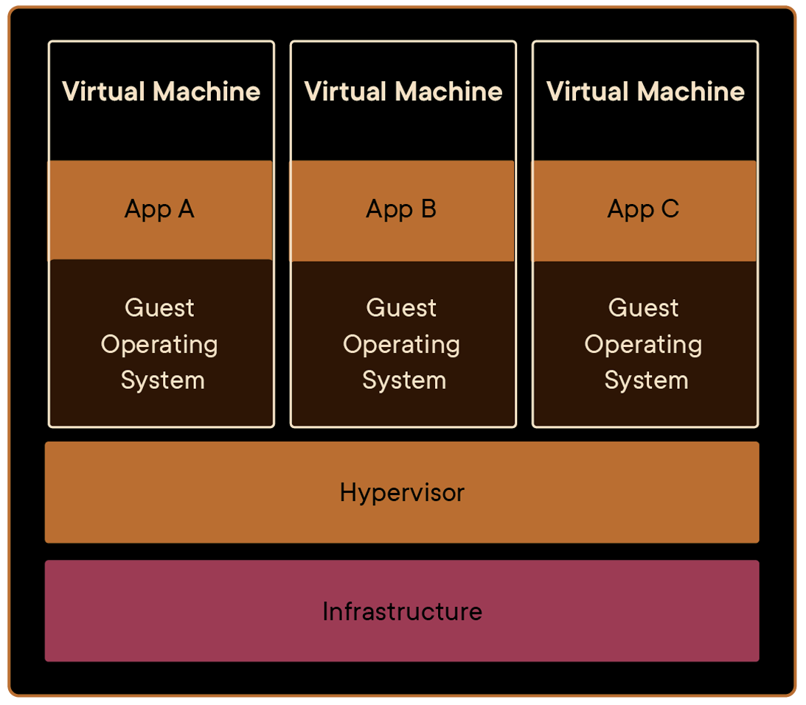
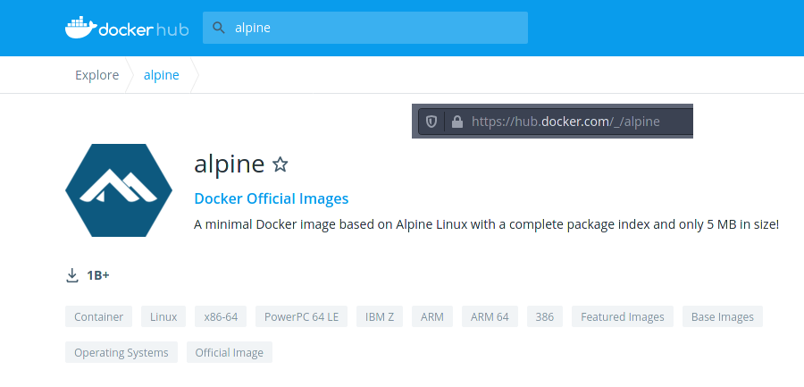
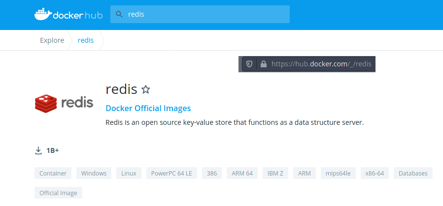

what's that?
is that better than VM?*
(*- it depends)
What are we going to cover?
- What is it?
- How does that compare..?
- Mid-depth technical analysis
- What is what - docker dictionary
- Images, layers, filesystems
- Networking
- Develompent flow
- Creating dockerfiles/composites
And we're skipping..
- CI/CD workflows
- Deployment strategies (docker swarm / kubernetes)
- Logging
- Heartbeat/restart policies
- Multi-stage builds
- Security
Maybe another presentation on these topics?
(This one is long enough)
Docker
- immutable, extendable images with self-sufficent environment
- image is an unit of deployment
- virtualize infrastructure: network, storage, dependencies
- handle deployement at scale (swarm clusters)
- rather secure, than not
- it just works for new team members
and more, as you shall see
Docker dict
- Image - ro, immutable, like rpm
- Container - "instance" of image, emphemereal
- Network
- Storage
OS "units" by the order of isolation
Thread
Process
Container
VM
Thread
- Exists within a process
- Uses process heap
- Has own stack(local variables, return addresses), priority and registers state
- Communicates with other threads by process's SHM
- The only thing it isolates is execution(parallelism)
Process
- Basic system entity
- Has program memory: instructions, static/global data, opened descriptors, uid, gid
- Has own memory (heap)
- Communicates with other processes (ipc, sockets)
- Adheres to kernel-enforced limitations (LDT/TSS / capabilities ex: fs permissions)
Container
- Basically it's still a process
- But kinda like VM :d
- Shared kernel
- Namespaces
- Capabilities
- cGroups
More on that later
Container schema
VM
- Highest level isolation
- Hypervisor
- Emulated architecture
- GuestOS
- Bound resources
Vm schema
Capabilities
tldr; Extended permissions checks based on uid/gid
UID 0 (root) - all capabilities
ex: CAP_FOWNER - bypass file permission checks
ex: CAP_NET_RAW - use raw/packet sockets (ex: ping)
>cap list<with docker you can enable/disable capabilities per container
side note: you can only remove capbs on running process
cGroups
- organize processes into groups
- groups are monitored and can be limited
- ex. pids - limit process numbers
- ex. freezer - freeze process and children
- ex. net_cls - throttle network
- ex. memory: process/kernel memory and swap
- >cgroup list<
Namespaces
- abstraction of system resources
- process is isolated, whilst thinking it owns global resource
- process's namespace scope is not penetrable
- ex: IPC, network, mounts, pid, time, users
- >ns list<
Back to docker!
Typical flow
- Find base image (OS)
- Extend with your dependencies(libraries)
- Copy your code inside, optionally mark for compilation
- Build image from above (docker build)
- Run to test whever it even works
- Find your external dependency images
- Compose a set of deployment (docker-compose)
- Run it
Find base image
that's it
Extend with your dependencies / copy code
FROM python:3-alpine
ENV PYTHONUNBUFFERED=1
# any package here
RUN pip install pytz
RUN mkdir /app
WORKDIR /app
COPY . /app
EXPOSE 8000
CMD [ "python", "-m", "http.server"]
Build image
docker build -t prez .
Run to test whever it even works
docker run --rm -d -p 8000:8000 prez
Find dependencies
again, thats all
Compose a set of deployment
version: '3.8'
services:
redis:
image: redis:alpine
presentation:
image: prez
ports:
- 8000:8000
Run it
docker-compose up
(ps. everything you do with compose may be done by hand using regular cmd)
Quick presentation
... dockerfile ...
Before we do anything advanced
we need to understand whats happening under the hood
Persistance in docker
but first a quick overview how docker stores data

Just image, no mounts
data is written onto container writable layer
(so it exists as long as container exists)
it's rather inefective (driver) and loitering running image
AS TO WHY will get to that in a minute
Volumes
- Storage units managed by Docker
- Persistent
- Shareable between nodes on same machine
Binds
- Standard linux mount, connecting dir from container to outside
- Has same subtree propagation as linux kernel mounts
- shared, slave, private etc..
Tmpfs
- Aye, it's just tmpfs. Stored in host memory
- So it's transparent for container
- Good for: keeping process volatile state data
Filesystems, layers, CoW and friends
Some docker theory and YOU WILL be amazed
Image layers

Image layers
Each write operation creates new layer
Final image is read only
Container FS has two layers, read-only image and writable thin layer
Upon write onto existing file IT IS COPIED to uppermost layer
upon removal, files/dirs are substituted with "special files"
directory renaming is in practice unusable
Image layers
We will see how layers are created near the end in section "Image Optimization"
Filesystems, CopyOnWrite
- Why copy on write? - immutable
- Layers are shared between multiple images and containers
Overlay, Aufs

Max 128 layers(inode exhaustion), copies whole files
Btrfs

Subvolume or snapshots, copies blocks, keeps track in metadata
Again, why images are so resource-savvy
shared layers for the win
Docker Networking
few types
each has it's own use
Docker Networking Bridge
- Default net
- Automatic DNS resolution to container names
- Connected with main network namespace by virtual interface
Docker Networking Overlay
- Docker magic
- Virtual network spans over Docker cluster
- Optionally encrypted
- Docker handles the routing
Docker Networking Host
- Host network stack is shared (no namespace)
- Port publishing doesn't work.
- Apps in containers bind to "real" ports
Docker Networking Macvlan
- Either as bridge (bind to physical interface)
- or vlan trunk (create and bind to virtual interface)
- all in all, this creates virtual L2 interfaces that get assigned real IP addresses
- (Yes, visible to outside network)
Docker Networking None
It's just... no network
Not sure why you would do that.. maybe for testing
Build process
.dockerignore == .gitignore / svn:ignore
Environment composition
Image Optimization
I'll just show by example
DockerfilePy2 vs. DockerfilePy2Opt
tool for analysis: docker history
All in all, how to develop with docker?
- Roughly think of architecture
- Get your base images
- Create simple docker-compose.yml
- Bind-mount your code or artifacts
- Code, run, fix, test, repeat
example dockerfile + docker-compose.yml
Sorry github! Here is inner-company stuff,
I can't share it
Your questions
- Jenkins pipeline?
- Vagrant vs. docker vs. kubernetes?
- Windows?
- Behind corporate proxy and aggresive VPN route propagation?
- GO BACK to skipped content and a few words about each of them
The end; © rikkt0r
©Images from docker doc
(╯°□°）╯︵ ┻━┻ ┬──┬ ノ( ゜-゜ノ)